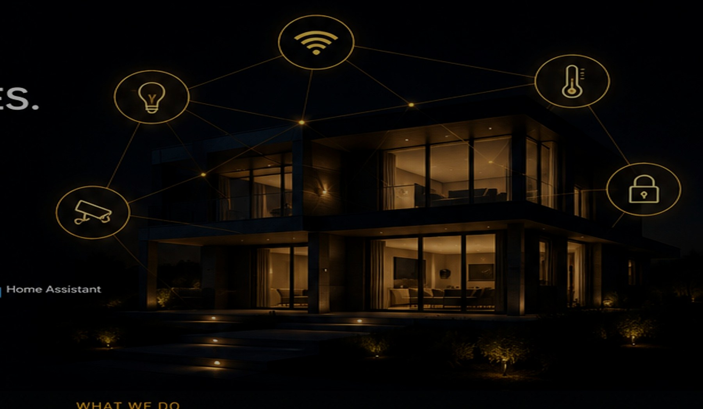

TP-Link Omada
Managed Network Solution
Gateways, PoE switches, Wi-Fi access points and central management selected for homes, hospitality and small businesses.
- Site-appropriate Omada hardware
- Secure VLAN and guest Wi-Fi setup
- Controller configuration
- Installation and performance testing